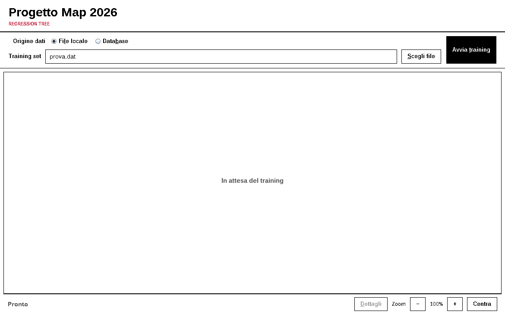
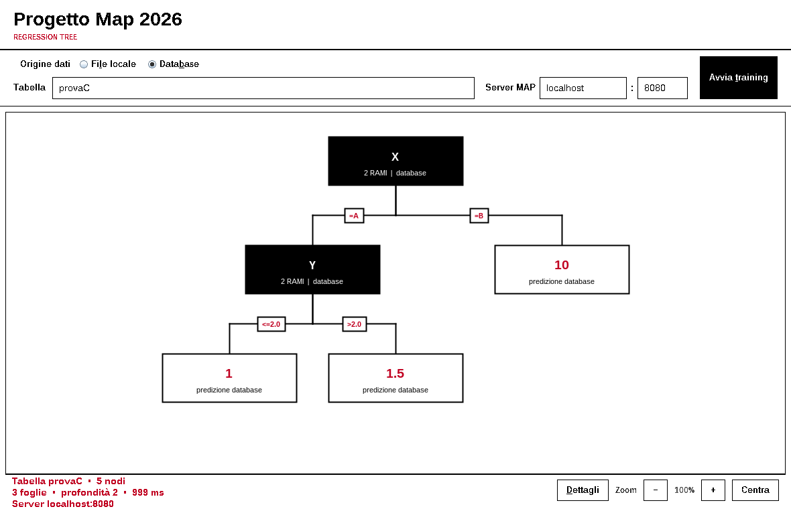

GUI · file locale
Legge un file .dat, apprende l’albero nella GUI e lo visualizza.
senza retesenza DB
Come apprendere, visualizzare, salvare e usare alberi di regressione tramite GUI Swing e applicazione client/server.
.dat oppure tabella del database attraverso il server MAP.Il progetto espone tre percorsi operativi. La scelta dipende dall’origine dei dati e dalla necessità di visualizzare l’albero o effettuare predizioni.
Legge un file .dat, apprende l’albero nella GUI e lo visualizza.
Chiede al server MAP di apprendere una tabella e ricostruisce il grafico ricevuto.
Apprende o carica un albero sul server e guida una o più predizioni.
.dat. GUI database e client testuale usano il server MAP; il database non viene contattato direttamente dai client.| Uso | Necessario |
|---|---|
| Tutte le modalità | Java Runtime 8 o successivo e comando java. |
| GUI | Ambiente grafico desktop. |
| Modalità database | MySQL o MariaDB sul computer del server MAP, porta 3306; una porta TCP libera per MAP, predefinita 8080. |
| Preparazione DB | Un utente amministratore MySQL/MariaDB per eseguire lo script iniziale. |
java -version
I comandi seguenti sono mostrati per Bash e, salvo diversa indicazione, vanno eseguiti dalla cartella principale del progetto. I JAR distribuiti non richiedono javac.
distribution/
├── client/mapClient.jar
├── gui/mapGUI.jar
└── server/
├── mapServer.jar
├── mysql-connector-java-8.0.17.jar
├── provaC
└── sql_file/map6_setup.sql
prova.dat servo.dat
Non spostare il connector MySQL rispetto a mapServer.jar: il manifest del server lo carica dalla stessa cartella.
java -jar distribution/gui/mapGUI.jar
Avviandola dalla cartella principale, il campo del file propone prova.dat, già incluso. È anche possibile eseguire il JAR da un’altra cartella, ma il percorso predefinito sarà risolto rispetto a quella cartella.

prova.dat e area del grafico vuota.| Zona | Uso |
|---|---|
| Origine dati | Seleziona File locale o Database; i campi sottostanti cambiano di conseguenza. |
| Campi di input | Percorso del training set oppure tabella, host e porta del server MAP. |
| Avvia training | Valida i campi, apprende l’albero e aggiorna il grafico. |
| Area centrale | Mostra l’albero e abilita lo scorrimento quando il disegno supera la finestra. |
| Barra inferiore | Stato, statistiche, dettagli testuali, zoom e centratura. |
Alt+L seleziona il file locale, Alt+B il database, Alt+S apre la scelta file, Alt+T avvia il training e Alt+D apre i dettagli. Il tasto Invio attiva il training.La modalità locale usa attributi esplicativi discreti e un target numerico. Tutto il parsing e l’apprendimento avvengono nella GUI, senza database né server.
.dat@schema 2 @desc X A,B @desc Y A,B @target class @data 4 A,A,1.0 A,B,1.5 B,A,10.0 B,B,10.0
| Direttiva | Significato |
|---|---|
@schema 2 | Numero degli attributi esplicativi. |
@desc X A,B | Nome e valori ammessi di un attributo discreto. |
@target class | Nome della variabile numerica da predire. |
@data 4 | Numero di esempi da leggere. |
@desc per ogni attributo indicato da @schema.A,B, non A, B.@desc.1.5.@data N devono essere disponibili N righe valide. Le righe mancanti causano un errore; eventuali righe oltre le prime N non vengono elaborate. Per evitare dati ignorati, fare coincidere N con il numero reale degli esempi.prova.dat, digitare un percorso o premere Scegli file.Invio.Al termine la barra mostra numero di esempi e attributi, nodi, foglie, profondità e tempo. Sono inclusi due training set pronti: prova.dat e servo.dat.
Se il percorso è vuoto, inesistente o il formato è invalido, appare una finestra Errore. Il risultato precedente viene rimosso, il pulsante Dettagli viene disabilitato e lo stato diventa Training non completato.

prova.dat.= A.esempi 0-14 è l’intervallo interno degli esempi coperti dal nodo locale.0.| Dettagli | Vista testuale completa del modello. |
| − / + | Zoom dal 50% al 150%, a passi del 10%. |
| Centra | Riporta la radice al centro e in alto. |
| Scroll | Esplora gli alberi oltre il viewport. |
variance.
Questa origine usa lo stesso mapServer.jar del client testuale. Il server legge la tabella MySQL/MariaDB, apprende e salva il modello; la GUI ne ricostruisce la struttura e la visualizza.
| Campo | Valore |
|---|---|
| Tabella | Nome della tabella in MapDB, per esempio provaC o servo. Non aggiungere .dat. |
| Server MAP | Host del computer che esegue mapServer.jar, per esempio localhost o 192.168.1.50. |
| Porta | Porta TCP del server MAP, predefinita 8080; non è la porta 3306 del database. |

provaC: il server riconosce lo split discreto X e quello continuo Y.Validazione: la porta deve essere fra 1 e 65535. Il nome tabella deve iniziare con una lettera e può poi contenere lettere, numeri, _ o $.
map6_setup.sql elimina e ricrea il database MapDB e l’utente MapUser@localhost. Tutti i dati già presenti in MapDB vengono persi. Eseguirlo solo nell’ambiente destinato al progetto.Avviare MySQL/MariaDB, quindi eseguire con un utente amministratore:
mysql -u root -p < distribution/server/sql_file/map6_setup.sql
Con il client MariaDB, sostituire mysql con mariadb.
| Database | MapDB |
| Utente | MapUser@localhost |
| Password | map |
| Permesso | SELECT su MapDB.* |
provaC contiene feature discrete e continue. servo contiene quattro feature e 167 esempi. Entrambe terminano con un target numerico.
Server, database e credenziali sono fissati nel JAR: localhost:3306, MapDB, MapUser, map.
| Regola | Motivo |
|---|---|
| Almeno due colonne riconosciute | Serve almeno una feature e un target. |
| Ultima colonna numerica | È sempre interpretata come target continuo. |
| Colonne precedenti = feature | VARCHAR produce attributi discreti; FLOAT/DOUBLE attributi continui. |
| Almeno una riga | Una tabella vuota non può essere usata per il training. |
Nessun valore NULL | Usare valori espliciti e coerenti in tutte le righe. |
| Nome semplice e valido | Per la GUI: lettera iniziale, poi lettere, numeri, _ o $. |
CREATE TABLE MapDB.miei_dati ( categoria VARCHAR(20), misura DOUBLE, target DOUBLE );
Compatibilità consigliata: usare CHAR/VARCHAR per feature discrete e FLOAT/DOUBLE per feature numeriche e target. Tipi SQL diversi potrebbero non essere riconosciuti dal server.
mapServer.jar. GUI e client contattano solo la porta MAP; non è necessario esporre la porta database 3306 in rete.Aprire un primo terminale e lasciarlo in esecuzione:
cd distribution/server java -jar mapServer.jar 8080
8080: java -jar mapServer.jar.8080 e riportare lo stesso valore nella GUI o nel client.Aprire un secondo terminale dalla cartella principale:
java -jar distribution/client/mapClient.jar localhost 8080
Sintassi generale ed esempio remoto:
java -jar distribution/client/mapClient.jar <host-server> <porta-server> java -jar distribution/client/mapClient.jar 192.168.1.50 8080
Host e porta sono obbligatori. Se il server è su un altro computer, consentire nel firewall la porta MAP scelta.
Learn Regression Tree from data [1] Load Regression Tree from archive [2] 1 File name: provaC
Nonostante la richiesta File name, inserire il nome della tabella in MapDB, senza estensione: per esempio provaC o servo.
distribution/server, la tabella provaC genera distribution/server/provaC. Un file omonimo viene sovrascritto. Lo stesso accade quando il training è richiesto dalla GUI.Il client presenta i rami disponibili a ogni nodo. Digitare l’indice numerico del ramo, non il valore dell’attributo.
0:X=A 1:X=B # Per X=A digitare: 0
0:Y<=2.0 1:Y>2.0 # Per Y=1.5 digitare: 0
Quando viene raggiunta una foglia:
Predicted class:1.0 Would you repeat ? (y/n)
Digitare y per predire un altro esempio oppure n per terminare. Sono accettate anche le maiuscole Y e N.

X=A e Y≤2.0, ottenendo la predizione 1.0.Learn Regression Tree from data [1] Load Regression Tree from archive [2] 2 File name: provaC
mapServer.jar.| Problema | Soluzione |
|---|---|
Connection refused o timeout GUI | Avviare il server; verificare host, stessa porta e firewall. La porta GUI è quella MAP, non 3306. |
Address already in use | Chiudere il processo che occupa la porta oppure sceglierne un’altra su server e client. |
| Errore di connessione al DB | Avviare MySQL/MariaDB su localhost:3306 del server ed eseguire map6_setup.sql. |
Access denied for user 'MapUser' | Rieseguire lo script come amministratore e verificare MapDB e MapUser@localhost. |
| Driver MySQL non trovato | Tenere mysql-connector-java-8.0.17.jar accanto a mapServer.jar. |
| Tabella inesistente o non valida | Usare il nome esatto, almeno due colonne compatibili, almeno una riga e un’ultima colonna FLOAT/DOUBLE. |
| Nome tabella rifiutato dalla GUI | Usare una lettera iniziale e poi solo lettere, numeri, _ o $. |
| Albero remoto oltre 10.000 nodi | Ridurre dati/complessità o usare il client testuale; la GUI interrompe la ricostruzione per limite interno. |
| Archivio non trovato in modalità 2 | Controllare nome e posizione sul server. Se parte da distribution/server, l’archivio deve essere lì. |
UnknownValueException | Inserire uno degli indici mostrati, da 0 all’ultimo ramo disponibile. |
| Il client termina per errore sugli argomenti | Avviarlo indicando sempre host e porta numerica. |
La GUI non trova prova.dat | Avviarla dalla cartella principale o selezionare il file con Scegli file. |
| Training locale non completato | Controllare percorso, direttive, numero e colonne degli esempi, valori dichiarati e target numerici. |
n.Ctrl+C.3306 ai client.Manuale allineato agli artefatti distribution/gui/mapGUI.jar, distribution/client/mapClient.jar, distribution/server/mapServer.jar e al codice GUI presente nel repository a luglio 2026.